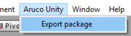

Build From Sources
Preparation
We clone two repository: ArucoUnity which contains the Unity project with C# scripts, and ArucoUnityPlugin which contains the C interface on the OpenCV modules.
Run the following commands:
git clone https://github.com/NormandErwan/ArucoUnity
git clone https://github.com/NormandErwan/ArucoUnityPlugin
mkdir -p ArucoUnityPlugin/build/opencv/
Build OpenCV
We need a build of OpenCV (minimum version: 3.3, maximum: 3.4) with the calib3d module and the aruco and ccalib contrib modules. These two contrib modules are not included in the official OpenCV releases.
A CMake project is already configured ready to be build. Run the following commands:
cd ArucoUnityPlugin/build/opencv/
cmake -DCMAKE_INSTALL_PREFIX=install/ -G <generator_name> ../../3rdparty/opencv_contrib/
cmake --build . --config Release
If you're not familiar with CMake generators, see this list of generators to set the <generator_name> variable above. For example, use use "Visual Studio 15 2017 Win64" with Visual Studio 2017 installed.
Alternatively, you can follow the opencv_contrib instructions.
Build ArucoUnityPlugin
First, make sure Unity is closed during the installation, unless the plugin installation will fail. Configure the building solution of the ArucoUnityPlugin, compile and install it by running the following commands:
cd ArucoUnityPlugin/build/
cmake -DCMAKE_INSTALL_PREFIX=.. -DOpenCV_DIR=build/opencv/install/ -DArucoUnity_DIR=../../ArucoUnity/ -G <generator_name> ..
cmake --build . --config Release --target INSTALL
The installation will copy the plugin into the bin/ and lib/ folders. It will also copy the plugin and the OpenCV libraries to the ArucoUnity/Assets/Plugins/<platform> folder.
On Linux the correct path to the -DOpenCV_DIR option above may be set to build/opencv/install/share/OpenCV/.
Export the ArucoUnity package
Open the ArucoUnity/ folder in Unity. No errors should be displayed in the Console panel.
A new entry named "ArucoUnity" is in the menu bar. Open it and select "Export package".

Documentation
Install the documentation generator DocFX.
Run the following commands:
cd ArucoUnity/
docfx
docfx serve docs/
Open the generated website on http://localhost:8080.